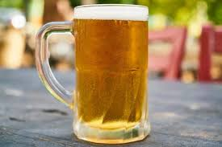

As cervejas aos olhos do mundo.
Uma viagem saborosa entre as garrafas desse líquido precioso, inventado meio sem querer por mulheres da Idade da Pedra.
por Márcio Evandro
Atualizado em 06/10/2020
 - Home - Copos - Fotos - Sabores - Fale conoscofeito pelas grandes cervejarias mundiais, o autor destaca a qualidade das promissoras microcervejarias artesanais brasileiras e desfaz mitos que há muito povoam as conversas de bar.
De onde veio ?
Os primeiros registros da fabricação de cerveja situam-se na antiga Suméria, na Mesopotâmia, por volta de 4000 a.C.
Provavelmente, a descoberta da cerveja foi acidental, tendo ocorrido quando algum pedaço
de pão de centeio se estragou e passou a apresentar um sabor diferente e agradável, fruto da fermentação alcoólica.
Qual foi a primeira marca de cerveja do mundo?
Weihenstephan é uma cervejaria e uma marca de cerveja da região alemã da Baviera.
É considerada a cerveja mais antiga do mundo (artesanal ou industrial), sendo vendida desde 1040 e fabricada desde os anos 800

Minha primeira cerveja.
O primeiro gole e péssimo!